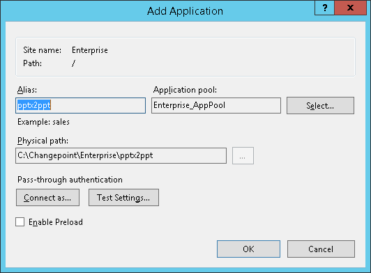

Introdução
Seguem detalhes da ferramenta que adiciona a funcionalidade de extensão PPT para o Intelledox/ChangePoint.
As instruções abaixo foram redigidas com base na máquina virtual do ChangePoint 2012 do projeto Sebrae.
Código fonte
O código-fonte e extras deste projeto está em https://github.com/lexblagus/pptx2ppt (link direto para o repositório zipado). Ele foi compilado em Visual Studio 2013 para .Net 4.5 em Windows Server 2016. Estrutura de pastas:
/documentation
- esta documentação em HTML
/extras
- contém o componente Aspose Slides e um arquivo pptx de exemplo
/packages
- dependências do código-fonte original
/pptx2ppt
- código fonte completo
/publish
- pasta a ser copiada para o servidor IIS em
C:\Changepoint\Enterprise\e renomeada parapptx2ppt
O componente de conversão de PowerPoint é o Aspose Slides (http://www.aspose.com/.net/powerpoint-component.aspx) e está em modo demonstração: ele adiciona uma marca d' água a fundo dos slides do arquivo PowerPoint convertido. É necessária a compra deste componente e recompilação do projeto para remover a marca de trial.
A customização do link de PPT dentro do Intelledox foi feito através de injeção de javascript (/pptx2ppt/custom/pptx2ppt.js) e requer o jQuery já devidamente anexado na respectiva página a ser customizada (/Intelledox/Infiniti/Produce/Finish.aspx).
Compilação
No Visual Studio, abra o arquivo de solução /pptx2ppt.sln que está na raiz dos códigos-fonte do repositório
Os arquivos mais importantes do projeto são:
/pptx2ppt/Default.aspx.cs
- Lógica do conversor
/pptx2ppt/Default.aspx
- Front-end
/pptx2ppt/Web.config
- Configurações adicionais que não requerem recompilação (como diretórios e nível de debug)
/pptx2ppt/custom/pptx2ppt.js
- Biblioteca a ser injetada no Intelledox (
C:\Changepoint\Intelledox\Infiniti\Produce\Finish.aspx)
Para atualizar a biblioteca Aspose.Slides.dll, basta atualizar o arquivo extras/Aspose.Slides.dll e recompilar o projeto. Caso isso não funcione, referencie novamente a biblioteca, seguindo os passos abaixo:

Para garantir uma correta publicação do aplicativo, apague todos os arquivos da pasta /publish.
Considerando que a compilação do projeto ocorre com sucesso, execute um Publish:
A pasta /publish está pronta para ser publicada no servidor conforme as instruções do próximo capítulo.
Em se tratando de como testar, o conversor tem três modos de operação:
- Interativo
- Usa um formulário de tela para indicar o arquivo de origem e o arquivo de destino dentro do servidor.
- Querystring de origem http
- Utiliza uma variável como entrada para conversão, exemplo:
http://cpdemo:8080/Default?source=http://cpdemo:8080/input-files/sample.pptx - Querystring de Intelledox
- Captura um documento dentro do banco de dados para o sistema de arquivos do servidor, descompacta, converte e entrega. Este é o modo que será utilizado na integração Intelledox/ChangePoint. Exemplo:
http://cpdemo:8080/pptx2ppt/Default?FileId=50fb0ca9-da9a-4020-a922-eaef1fcd8fa9&JobId=ca12fd51-1ff7-4860-be8a-21b339d14b04
Instalação e configuração
Passo 1: Configuração do IIS
1.1. Copie a pasta /publish para C:\Changepoint\Enterprise\ e renomeie-a para pptx2ppt
1.2. No IIS Manager, converta a pasta recém-criada (pptx2ppt) para aplicação

Passo opcional 2: testar se o PPTX2PPT está funcionando
2.1. Abra o endereço http://cpdemo:8080/pptx2ppt/Default
Nesta tela é possível converter arquivos manualmente, usando as pastas de conversão criadas dentro do servidor (C:\Changepoint\Enterprise\pptx2ppt\input-files\sample.pptx e C:\Changepoint\Enterprise\pptx2ppt\output-files\sample.ppt). Use duas barras invertidas (\\) como separador de path.
2.2. Há um arquivo exemplo em http://cpdemo:8080/pptx2ppt/input-files/sample.pptx. Para fazer a conversão via querystring, chame no browser o endereço http://cpdemo:8080/pptx2ppt/Default?source=http://cpdemo:8080/pptx2ppt/input-files/sample.pptx. O conversor deve entregar o arquivo de exemplo devidamente convertido.
Passo 3: Customização do Intelledox
3.1. Abrir o arquivo C:\Changepoint\Intelledox\Infiniti\Produce\Finish.aspx no Notepad
3.2. Adicionar o código abaixo na linha 11
<script type="text/javascript" src="/pptx2ppt/custom/pptx2ppt.js"></script>
(nota: a imagem abaixo está com o nome do arquivo errado; o correto é pptx2ppt.js)
3.3. Para validar se a customização funciona, faça login no Changepoint (http://cpdemo:8080/) e entre no item de menú CPX / Exemplo PowerPoint
3.4. Siga com o tutorial clicando nas setas para direita até aparecer o botão de submit; clique nele.
3.5. Logo 'a direita do link "PowerPoint Example (pptx)", deve aparecer o link "(ppt)". Este link aponta para o conversor de arquivo.
Caso haja alguma mensagem de erro, ela será exibida no log da aplicação. A configuração deste log vem logo abaixo
Análise de problemas
O arquivo pptx2ppt/web.config contém algumas configurações úteis no processo de debug:
appSettings/ppt2ppt_logLevel
- Define o detalhamento das mensagens que paracem para o usuário. O padrão é "info". O recomendável para debug de problemas é "debug".
appSettings/ppt2ppt_Simulation
- Faz com que o arquivo de destino não seja entregue (ou seja, não ocorra o http redirect) para que o log de tela possa ser visto.
appSettings/ppt2ppt_inputFolder
- Nome da pasta que receberá os arquivos PPTX e GZ para conversão ou descompressão; esta pasta não tem garbage collection!
appSettings/ppt2ppt_outputFolder
- Nome da pasta que terá os arquivos PPT a serem entregues para o usuário. Esta pasta também não tem garbage collection!
connectionStrings/IntelledoxConnection
- Dados de conexão com o servidor de banco de dados, para conversão de documentos Intelledox.
Sobre
Lex Blagus, http://blag.us/ para Ornitorrinko http://www.ornitorrinko.com/